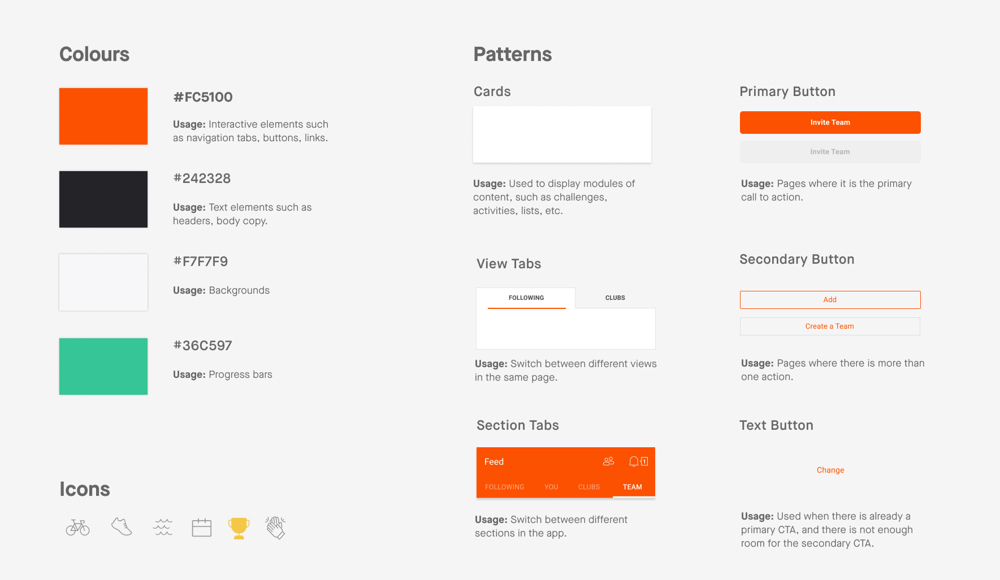

HelpMate
A community-based sharing economy app that allows people who need help with household chores to get connected to young people in their neighbourhoods.
Role
- Translated complex use cases into intuitive interfaces
- Created a consistent design system from scratch
- Wireframing, from sketches to mockups
- Conducted usability testing and facilitated results analysis
- Created interactive prototype and product video
Tools
- Figma
- Photoshop
- After Effects
When
March - April 2020

App Teardown
Tasked with creating a new feature for the Strava exercise app in three weeks, I worked with two other designers to conduct an intensive teardown of the app's existing features and interactions. This allowed us to quickly become familiar with the app's interface and interaction patterns, as well as their target audience.
As a social network for athletes, based on its core feature of recording exercise routes on a map, Strava's primary target audience are runners and cyclists. The emphasis on social features (events, friends feed) shows the app is focused on athletes of casual to intermediate skill level rather than professionals.
User Research Themes
Using a mix of user interviews and reading exercise forums, we were able to get a better sense of our target demographic's approach to exercising
- Some athletes are motivated by knowing and seeing other people participating in the same activities, and through social feedback such as likes and comment on their activities.
- Many athletes want to keep track of their personal progress. Some share their progress with their friends to receive social motivation, while others track it for personal motivation.
- Beginner and intermediate athletes find it difficult to find reputable information about gear. When looking through multiple forums about running and Strava, we found that many people were talking about gear online and asking for recomendations.
Personas
We also did some research into Strava in order to understand the company's mission and motivations, which helped us put ourselves into the shoes of the company and understand what features might make sense from their position. Using this info and the user research info, we crafted two personas.

Ideation and Sketching
My team and I conducted a few rounds of sketch ideation and design reviews resulting in three initial proposals. I drew up sketch wireframes for two of the proposals, checking in with my teammates regularly to stay on the same page about the visualization of our idea.

Gear Check
A community-based gear check-in review system for athletic gear to help beginners pick out the right athletic gear for their needs.

Team Challenges
A version of the existing Strava individual challenges, that allows users to create teams to tackle challenges together.
We moved forward with Team Challenges for two main reasons: one, it was the feature that aligned the most with the company's goals of creating a robust social network for athletes and two, our other proposals (including Gear Check) potentially leaned too far into the realm of e-commerce, which would stray from the app's core purpose.
Fitting Into Strava's Design System
Our earlier analysis of Strava's existing interface came in handy as I worked with one teammate on translating my earlier sketches into high-fidelity mockups. We were very careful to maintain consistency with the interaction and visual design patterns we observed so that our feature could live comfortably in Strava's existing design system.
Final Mockups
Our earlier analysis of Strava's existing interface came in handy as I worked with one teammate on translating my earlier sketches into high-fidelity mockups. We were very careful to maintain consistency with the interaction and visual design patterns we observed so that our feature could live comfortably in Strava's existing design system.